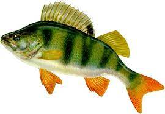
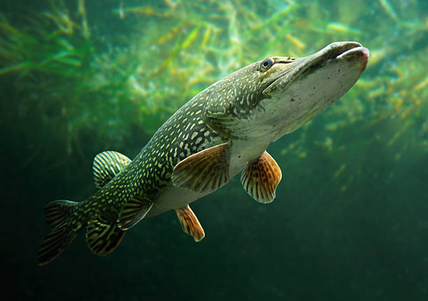
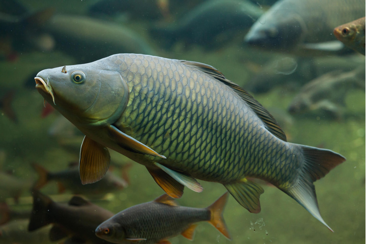

Главная
Информация
О нас
Телефон
Клёвый улов - твоя рыба мечты!
Окунь - сумеречно-дневной хищник, который охотится в светлое время суток с пиком активности на границе дня и ночи. Ночью активность окуня резко снижается.

Щука - чрезвычайно прожорливые хищники. Питаются они в основном рыбой (плотвой, окунями, гольянами). Для щуки характерен каннибализм.

Карпы - вид пресноводных лучепёрых рыб семейства карповых. Методом селекции получены культурные формы.
